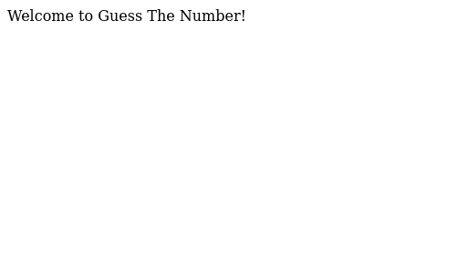
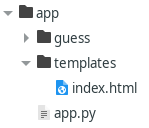
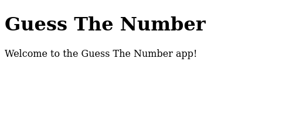
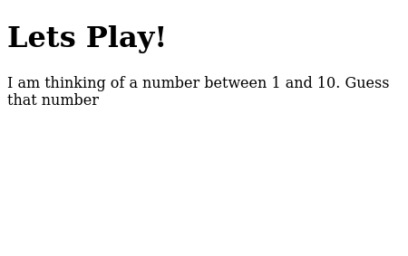

Your First Flask App - Part 1¶
As mentioned in an earlier post, I’ve started to learn how to use Flask to create web apps. Here, I will try to provide sample code that you can use to get your first Flask app up and running.
Lets build a web app called Guess The Number . In this web app, the user tries to guess a randomly selected number. While the full code is available here, you may find it to be a more rich learning experience to go through the steps below to build it from the ground up.
Set up your project¶
Create a folder for the project called ‘guess_the_number’. Step into this folder and create a virtual Python environment. Then activate the environment. For Linux distros:
python -m venv guess
source guess/bin/activate
See here for other operating systems. Next, install flask:
pip install Flask
This will install Flask and its dependencies.
Followng this, create an app folder. Within this, create app.py with the following code:
1 2 3 4 5 6 7 8 9 10 | from flask import Flask
app = Flask(__name__)
@app.route("/")
def welcome():
return "<p>Welcome to Guess The Number!</p>"
if __name__ == '__main__':
app.run(debug=True)
|
In the code above, we first import Flask to access its functionality. Next we create an instance of a Flask object. Then we have Python decorator ‘@app.route’ which tells Flask which URL will trigger the code in the welcome function. Here “/” signifies the root or base URL of your web app. When triggered, the welcome function returns some simple HTML code, printing out “Welcome to Guess The Number”, welcoming the user to the site. Lets run our bare-bones Flask app to see this in action. In the directory where app.py is located and enter either python app.py or flask run
Note
The filename app.py will automatically be detected and processed by Flask. If you decide to name app.py something else, you may have to set the FLASK_APP environment variable on your system.
Depending on your OS, the commmands will be something like:
export FLASK_APP=app
export FLASK_ENV=development
flask run
Flask will then print out the URL for your app after the last command (most likely http://127.0.0.1:5000/ ). Go to this URL and you should see something like below.
Congratulations! You got your first Flask app up and running. Now lets add some functionality to it.
Our index.html¶
The page specified by index.html is the default start page for a web application. Within the file structure of your app, create a templates folder. For Flask apps, HTML files are traditionally stored in this folder. In here, create index.html.
Add the following code to index.html:
1 2 3 4 5 6 7 8 9 | <!DOCTYPE html>
<html>
<body>
<h1>Guess The Number</h1>
<p>Welcome to the Guess The Number app!</p>
</body>
</html>
|
Note
If you are not familar with HTML, the angle bracket represent tags. W3 Schools and MDN web docs are good references sites for learning more about specific HTML tags and their attributes.
Now that we have an index.html, lets tell Flask to take the contents of index.html and render it in the frontend. At the top of app.py, add the following import statement
from flask import render_template
Then modify the welcome function as so:
1 2 3 | @app.route("/")
def welcome():
return render_template("index.html")
|
Re-start your Flask app and you should see the following:
Let’s play¶
Now that we have this, lets create some interactivity. How about adding a ‘Play’ hyperlink to index.html? When we click on this link, we are taken to a new page where we can play the actual game.
First we will create a play.html file in the templates folder with the following code:
1 2 3 4 5 6 7 8 9 | <!DOCTYPE html>
<html>
<body>
<h1>Lets Play!</h1>
<p>I am thinking of a number between 1 and 10. Guess that number</p>
</body>
</html>
|
Next, we will adjust app.py so that Flask can render the necessary HTML when play.html is called.
1 2 3 | @app.route("/play")
def playtime():
return render_template("play.html")
|
Finally, we will add a link to index.html, that when clicked on, will take the user to play.html.
1 2 3 4 5 6 7 8 9 10 11 | <!DOCTYPE html>
<html>
<body>
<h1>Guess The Number</h1>
<p>Welcome to the Guess The Number app!</p>
<a href="new_game">Let's Play</a>
</body>
</html>
|
Try out this code. Your home page should show you a link like below.

Click on it and it should bring you to play.html
Now we have a basic play page. In the next blog post <<add a link here for it>>, we will add:
a way for the user to input their guess
code that will check if the guess is correct
code that will provide feedback to the user on their guess.
See you there!